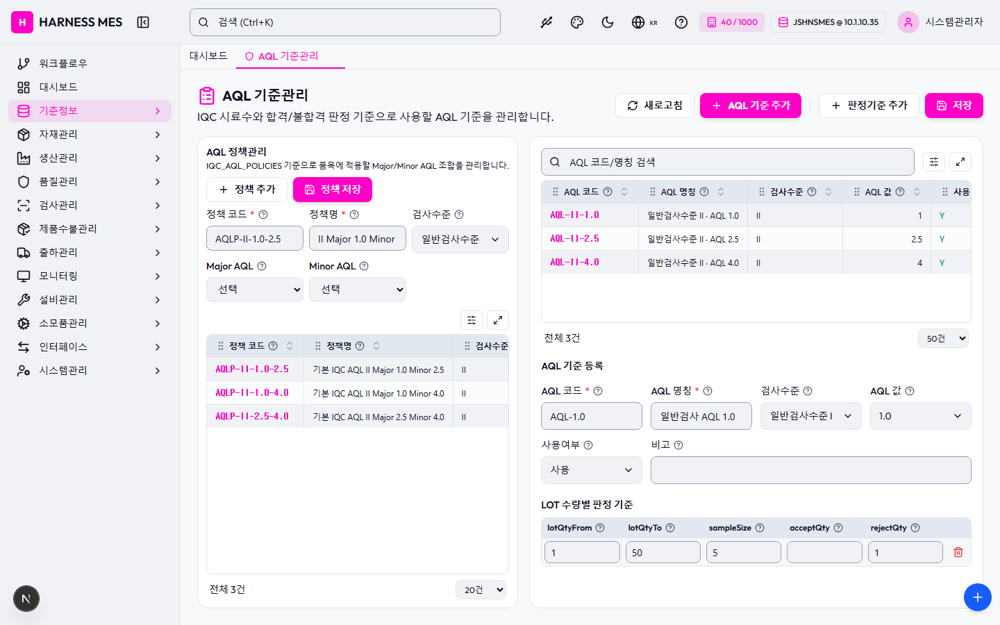

Route: /quality/aql
Status: PASS / HTTP 200
| 기능/버튼 | 처리 방식 | 상태 | 비고 |
|---|---|---|---|
| 화면 로드 | GET /quality/aql | 실행 | HTTP 200 |
| 라우트 prewarm | 직접 HTTP 확인 | 실행 | HTTP 200, 1047ms |
| 초기 API 호출 | 브라우저 네트워크 수집 | 실행 | 14건 |
| 🇰🇷 | 화면 버튼 목록화 | 목록화 | 후속 메뉴별 세부 시나리오 실행 대상 |
| 시스템관리자 | 화면 버튼 목록화 | 목록화 | 후속 메뉴별 세부 시나리오 실행 대상 |
| 워크플로우 | 화면 버튼 목록화 | 목록화 | 후속 메뉴별 세부 시나리오 실행 대상 |
| 대시보드 | 화면 버튼 목록화 | 목록화 | 후속 메뉴별 세부 시나리오 실행 대상 |
| 기준정보 | 화면 버튼 목록화 | 목록화 | 후속 메뉴별 세부 시나리오 실행 대상 |
| 자재관리 | 화면 버튼 목록화 | 목록화 | 후속 메뉴별 세부 시나리오 실행 대상 |
| 생산관리 | 화면 버튼 목록화 | 목록화 | 후속 메뉴별 세부 시나리오 실행 대상 |
| 품질관리 | 화면 버튼 목록화 | 목록화 | 후속 메뉴별 세부 시나리오 실행 대상 |
| 검사관리 | 화면 버튼 목록화 | 목록화 | 후속 메뉴별 세부 시나리오 실행 대상 |
| 제품수불관리 | 화면 버튼 목록화 | 목록화 | 후속 메뉴별 세부 시나리오 실행 대상 |
| 출하관리 | 화면 버튼 목록화 | 목록화 | 후속 메뉴별 세부 시나리오 실행 대상 |
| 모니터링 | 화면 버튼 목록화 | 목록화 | 후속 메뉴별 세부 시나리오 실행 대상 |
| 설비관리 | 화면 버튼 목록화 | 목록화 | 후속 메뉴별 세부 시나리오 실행 대상 |
| 소모품관리 | 화면 버튼 목록화 | 목록화 | 후속 메뉴별 세부 시나리오 실행 대상 |
| 인터페이스 | 화면 버튼 목록화 | 목록화 | 후속 메뉴별 세부 시나리오 실행 대상 |
| 시스템관리 | 화면 버튼 목록화 | 목록화 | 후속 메뉴별 세부 시나리오 실행 대상 |
| AQL 기준관리 | 화면 버튼 목록화 | 목록화 | 후속 메뉴별 세부 시나리오 실행 대상 |
| 새로고침 | 화면 버튼 목록화 | 목록화 | 후속 메뉴별 세부 시나리오 실행 대상 |
| AQL 기준 추가 | 화면 버튼 목록화 | 목록화 | 후속 메뉴별 세부 시나리오 실행 대상 |
| 판정기준 추가 | 화면 버튼 목록화 | 목록화 | 후속 메뉴별 세부 시나리오 실행 대상 |
| 저장 | 화면 버튼 목록화 | 목록화 | 후속 메뉴별 세부 시나리오 실행 대상 |
| 정책 추가 | 화면 버튼 목록화 | 목록화 | 후속 메뉴별 세부 시나리오 실행 대상 |
| 정책 저장 | 화면 버튼 목록화 | 목록화 | 후속 메뉴별 세부 시나리오 실행 대상 |
| 전체화면 보기 | 화면 버튼 목록화 | 목록화 | 후속 메뉴별 세부 시나리오 실행 대상 |
| AI 채팅 | 화면 버튼 목록화 | 목록화 | 후속 메뉴별 세부 시나리오 실행 대상 |
| 개선요청 등록 | 화면 버튼 목록화 | 목록화 | 후속 메뉴별 세부 시나리오 실행 대상 |
| 입력 필드 | DOM 수집 | 목록화 | 12개 |
| 선택 필드 | DOM 수집 | 목록화 | 8개 |
| 목록/그리드 | DOM 수집 | 목록화 | table 2, grid 0 |
| Method | URL | Status | OK |
|---|---|---|---|
| GET | /api/health | 200 | OK |
| GET | /api/db-info | 200 | OK |
| GET | /api/health | 200 | OK |
| GET | /api/db-info | 200 | OK |
| GET | /api/master/companies/public | 200 | OK |
| GET | /api/master/companies/public/plants?company=40 | 200 | OK |
| GET | /api/db-info | 200 | OK |
| GET | /api/system/comm-configs?commType=SERIAL&useYn=Y | 200 | OK |
| GET | /api/auth/me | 200 | OK |
| GET | /api/system/configs/active | 200 | OK |
| GET | /api/menu-categories/tree | 200 | OK |
| GET | /api/quality/aql?limit=5000 | 200 | OK |
| GET | /api/quality/aql/policies | 200 | OK |
| GET | /api/master/com-codes/all-active | 200 | OK |
수집된 오류 없음

H HARNESS MES 🇰🇷 40 / 1000 JSHNSMES @ 10.1.10.35 시스템관리자 워크플로우 대시보드 기준정보 자재관리 생산관리 품질관리 검사관리 제품수불관리 출하관리 모니터링 설비관리 소모품관리 인터페이스 시스템관리 대시보드 AQL 기준관리 AQL 기준관리 IQC 시료수와 합격/불합격 판정 기준으로 사용할 AQL 기준을 관리합니다. 새로고침 AQL 기준 추가 판정기준 추가 저장 AQL 정책관리 IQC_AQL_POLICIES 기준으로 품목에 적용할 Major/Minor AQL 조합을 관리합니다. 정책 추가 정책 저장 정책 코드 * 정책명 * 검사수준 전체 특별검사수준 S-1 특별검사수준 S-2 특별검사수준 S-3 특별검사수준 S-4 일반검사수준 I 일반검사수준 II 일반검사수준 III Major AQL 선택 AQL-II-1.0 - 일반검사수준 II · AQL 1.0 AQL-II-2.5 - 일반검사수준 II · AQL 2.5 AQL-II-4.0 - 일반검사수준 II · AQL 4.0 Minor AQL 선택 AQL-II-1.0 - 일반검사수준 II · AQL 1.0 AQL-II-2.5 - 일반검사수준 II · AQL 2.5 AQL-II-4.0 - 일반검사수준 II · AQL 4.0 정책 코드 정책명 검사수준 Major Minor 사용 AQLP-II-1.0-2.5 기본 IQC AQL II Major 1.0 Minor 2.5 II AQL-II-1.0 AQL-II-2.5 Y AQLP-II-1.0-4.0 기본 IQC AQL II Major 1.0 Minor 4.0 II AQL-II-1.0 AQL-II-4.0 Y AQLP-II-2.5-4.0 기본 IQC AQL II Major 2.5 Minor 4.0 II AQL-II-2.5 AQL-II-4.0 Y 전체 3건 20건 50건 100건 200건 500건 AQL 코드 AQL 명칭 검사수준 AQL 값 사용 AQL-II-1.0 일반검사수준 II · AQL 1.0 II 1 Y AQL-II-2.5 일반검사수준 II · AQL 2.5 II 2.5 Y AQL-II-4.0 일반검사수준 II · AQL 4.0 II 4 Y 전체 3건 20건 50건 100건 200건 500건 AQL 기준 등록 AQL 코드 * AQL 명칭 * 검사수준 전체 특별검사수준 S-1 특별검사수준 S-2 특별검사수준 S-3 특별검사수준 S-4 일반검사수준 I 일반검사수준 II 일반검사수준 III AQL